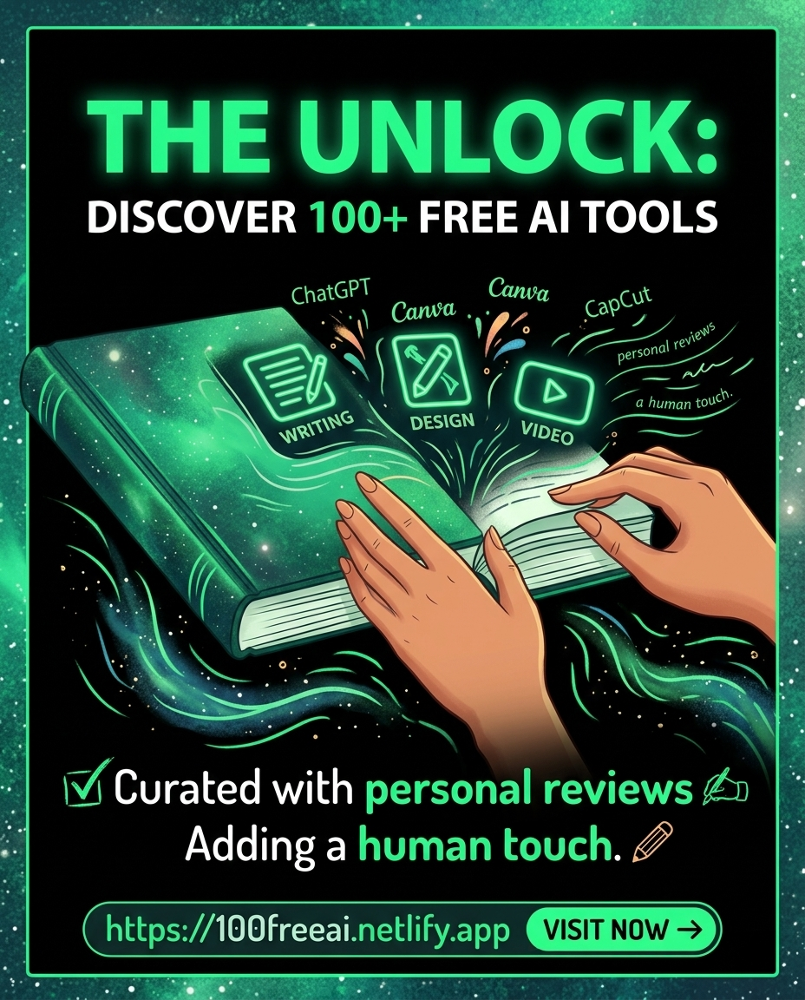

Explore the 100+ Elite AI Tools 🚀
Curated directory for professional designers and developers.
"As a fellow designer, I hand-picked this for you. Leonardo isn't just an image generator; it's a full creative suite for your professional projects."
Visit Leonardo →